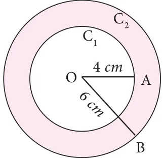
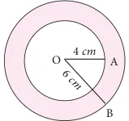

<!DOCTYPE html>
<html lang="en">
<head>
<meta charset="UTF-8">
<meta name="viewport" content="width=device-width,initial-scale=1">
<title>Exercise 4.2 — Geometry</title>
<meta name="description" content="Class 7 Mathematics · Term 3 · Geometry · Exercise 4.2">
<link rel="icon" href="data:image/svg+xml,<svg xmlns='http://www.w3.org/2000/svg' viewBox='0 0 100 100'><text y='.9em' font-size='90'>📘</text></svg>">
<link rel="stylesheet" href="../../../assets/book.css">
<link rel="stylesheet" href="https://cdn.jsdelivr.net/npm/katex@0.16.11/dist/katex.min.css" crossorigin="anonymous">
</head>
<body>
<header class="topbar">
<div class="topbar-in">
  <div class="crumb">
    <span class="c1"><a href="../../../index.html">Library</a> · <a href="../../index.html">Class 7 Mathematics · Term 3</a></span>
    <span class="c2">Geometry · Exercise 4.2</span>
  </div>
  <a class="tb-btn" data-nav="prev" href="../../04-geometry/05-construction-of-circles-and-concentric-circles-4.3/index.html" title="4.3 Construction of circles and concentric circles">←</a>
  <details class="drawer"><summary class="tb-btn" title="Sections in this chapter">☰</summary>
<div class="drawer-panel"><div class="dh">Geometry</div><a href="../01-chapter-opener/index.html">Chapter opener</a><a href="../02-introduction-4.1/index.html">4.1 Introduction</a><a href="../03-symmetry-through-transformations-4.2/index.html">4.2 Symmetry through transformations</a><a href="../04-exercise-4.1/index.html">Exercise 4.1</a><a href="../05-construction-of-circles-and-concentric-circles-4.3/index.html">4.3 Construction of circles and concentric circles</a><a href="../06-exercise-4.2/index.html" aria-current="page">Exercise 4.2</a><a href="../07-exercise-4.3/index.html">Exercise 4.3</a><a href="../08-summary/index.html">Summary</a><a href="../09-ict-corner/index.html">ICT Corner</a></div></details>
  <a class="tb-btn" data-nav="next" href="../../04-geometry/07-exercise-4.3/index.html" title="Exercise 4.3">→</a>
  <button class="tb-btn" data-theme-toggle title="Toggle light / dark" aria-label="Toggle light or dark theme">◐</button>
</div>
<div class="progress"><span style="width:66.1%"></span></div>
</header>
<main class="wrap">
<div class="sec-head">
  <p class="eyebrow"><a href="../index.html">Chapter 4 · Geometry</a></p>
  <h1>Exercise 4.2</h1>
  <p class="sec-meta">Textbook pages 18 · 4 figures</p>
</div>
<article class="prose">
<p>Width of the circular ring (see Fig. 4.21)</p>
<figure class="fig side-fig"></figure>
<div class="mathblock"><p>\(= OB - OA= r_{2} - r_{1}\).</p></div>
<h3 id="s-4-3-2-construction-of-concentric-circles">4.3.2 Construction of Concentric Circles</h3>
<p>Example Draw concentric circles with radii 4 cm and 6 cm and shade the circular ring. Find its width. Fig. 4.21</p>
<p>Step 1: Draw a rough diagram and mark the given measurements. Step 2: Take any point O and mark it as the centre. Step 3: With O as centre and draw a circle of radius \(OA = 4\) cm Step 4: With O as centre and draw a circle of radius \(OB = 6\) cm. Thus the concentric circles C_{1} and C_{2} are drawn. Width of the circular ring \(= OB - OA = 6 - 4 = 2\) cm.</p>
<figure class="fig"><figcaption>Fig. 4.22</figcaption></figure>
<figure class="fig"></figure>
<figure class="fig wide"></figure>
<ul class="qlist">
<li><span class="mk">1.</span><span class="lt">Draw circles for the following measurements of radius (r)/ diameters(d).</span></li>
<li><span class="mk">(i)</span><span class="lt">\(r = 4\) cm (ii) \(d = 12\) cm. (iii) \(r = 3.5\) cm (iv) \(r = 6.5\) cm.</span></li>
<li><span class="mk">(v)</span><span class="lt">\(d = 6\) cm</span></li>
<li><span class="mk">2.</span><span class="lt">Draw concentric circles for the following measurements of radii / diameters. Find</span></li>
</ul>
<p>out the width of each circular ring.</p>
<ul class="qlist">
<li><span class="mk">(i)</span><span class="lt">\(r = 3\) cm and \(r = 5\) cm.</span></li>
<li><span class="mk">(ii)</span><span class="lt">\(r = 3.5\) cm and \(r = 6.5\) cm.</span></li>
<li><span class="mk">(iii)</span><span class="lt">\(d = 6.4\) cm and \(d = 11.6\) cm.</span></li>
<li><span class="mk">(iv)</span><span class="lt">\(r = 5\) cm and \(r = 7.5\) cm.</span></li>
<li><span class="mk">(v)</span><span class="lt">\(d = 6.2\) cm and \(r = 6.2\) cm.</span></li>
<li><span class="mk">(vi)</span><span class="lt">\(r = 7.1\) cm and \(d = 12\) cm.</span></li>
</ul>
</article>
<nav class="pager"><a class="" data-nav="prev" href="../../04-geometry/05-construction-of-circles-and-concentric-circles-4.3/index.html"><span class="dir">← Previous</span><span class="t">4.3 Construction of circles and concentric circles</span><span class="ch">Geometry</span></a><a class="nx" data-nav="next" href="../../04-geometry/07-exercise-4.3/index.html"><span class="dir">Next →</span><span class="t">Exercise 4.3</span><span class="ch">Geometry</span></a></nav>
</main><footer class="site">Generated from the source textbook PDFs · text, figures and exercises belong to their respective publishers.</footer><script defer src="https://cdn.jsdelivr.net/npm/katex@0.16.11/dist/katex.min.js" crossorigin="anonymous"></script>
<script defer src="https://cdn.jsdelivr.net/npm/katex@0.16.11/dist/contrib/auto-render.min.js" crossorigin="anonymous"
  onload="renderMathInElement(document.body,{delimiters:[
    {left:'\\(',right:'\\)',display:false},
    {left:'$$',right:'$$',display:true},
    {left:'\\[',right:'\\]',display:true}],throwOnError:false,ignoredTags:['script','noscript','style','textarea','pre','code']})"></script>
<script src="../../../assets/book.js"></script>
</body>
</html>
